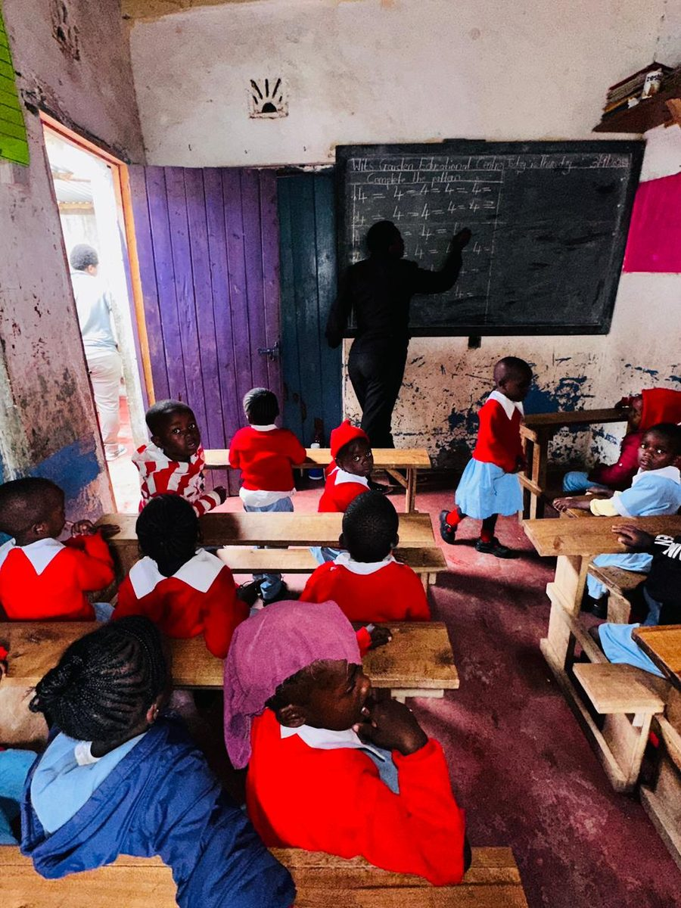
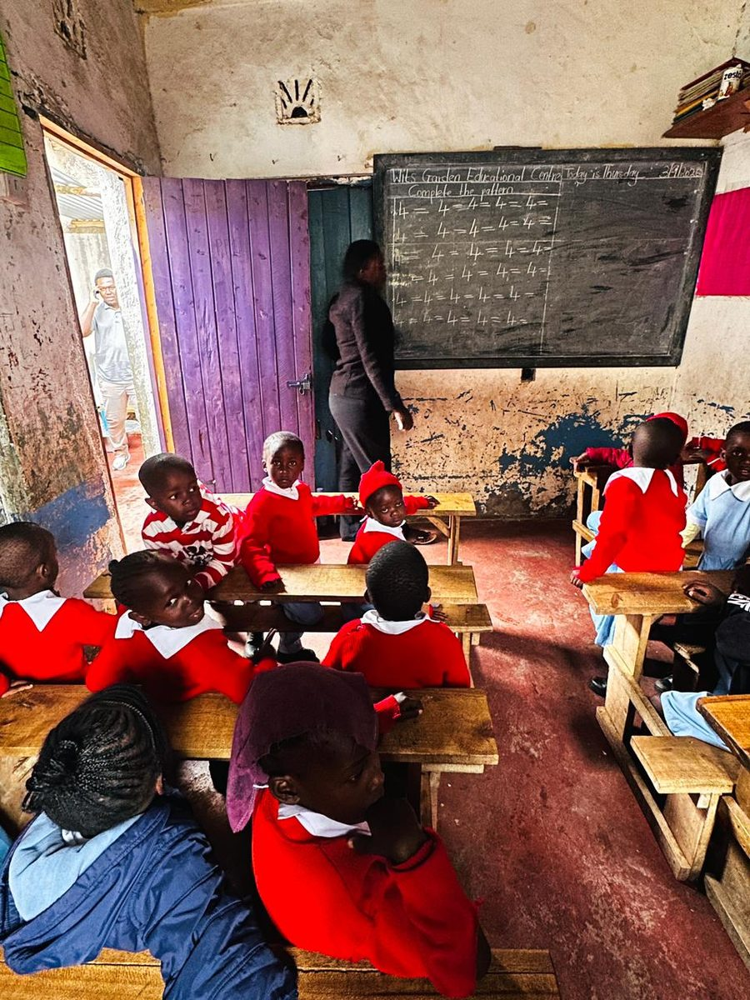
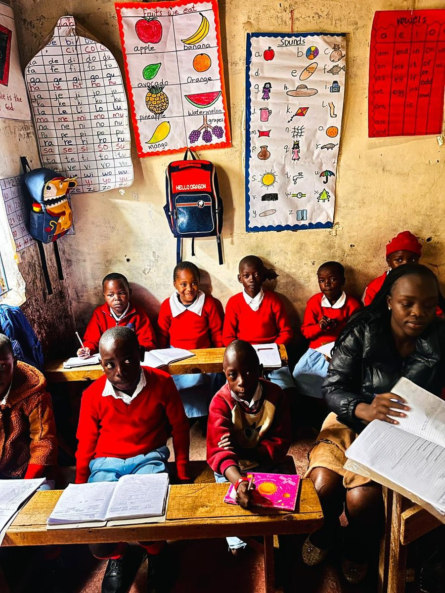
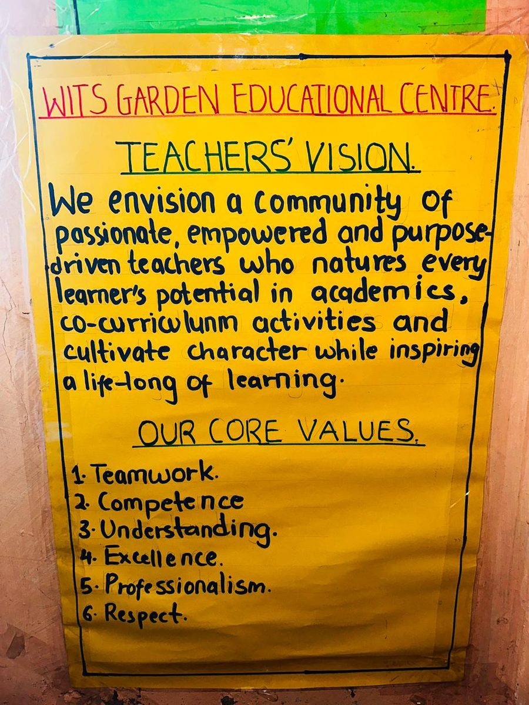
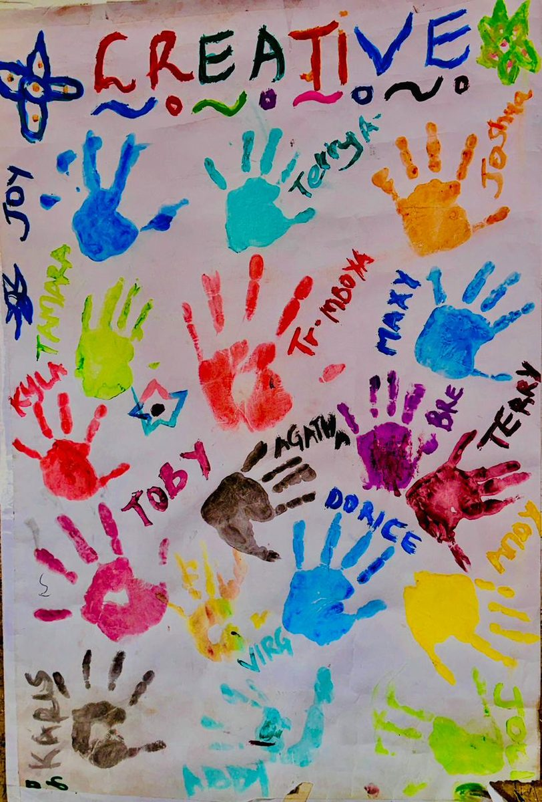
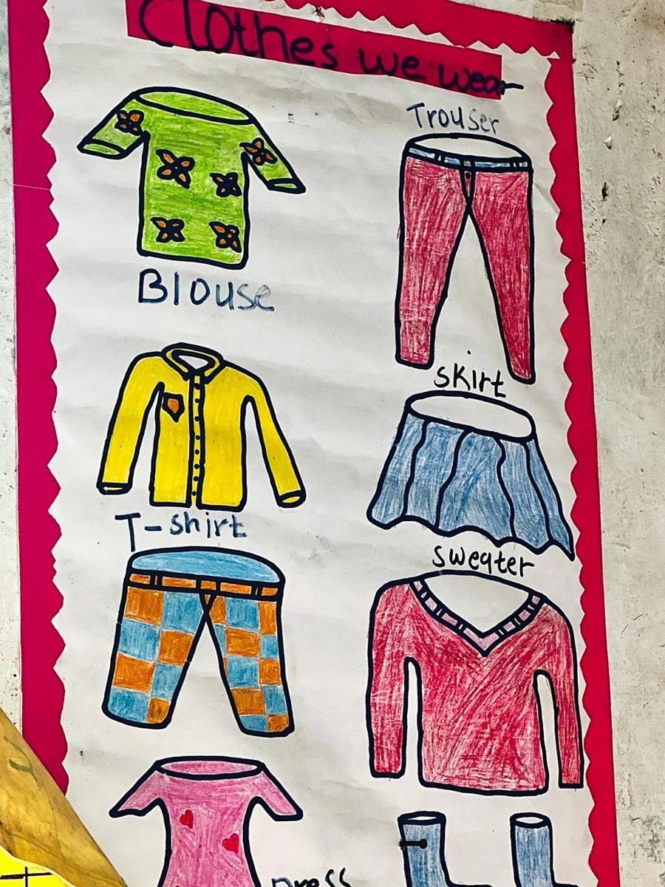
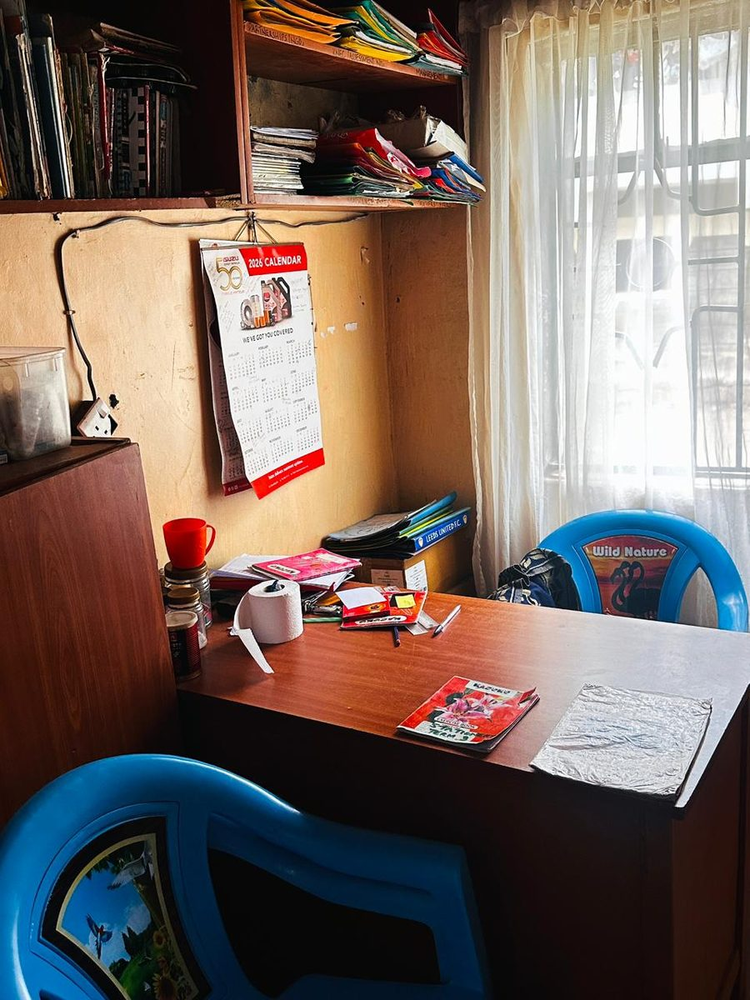
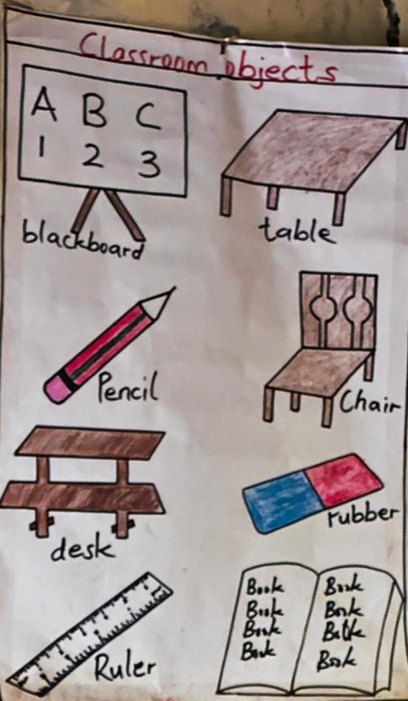
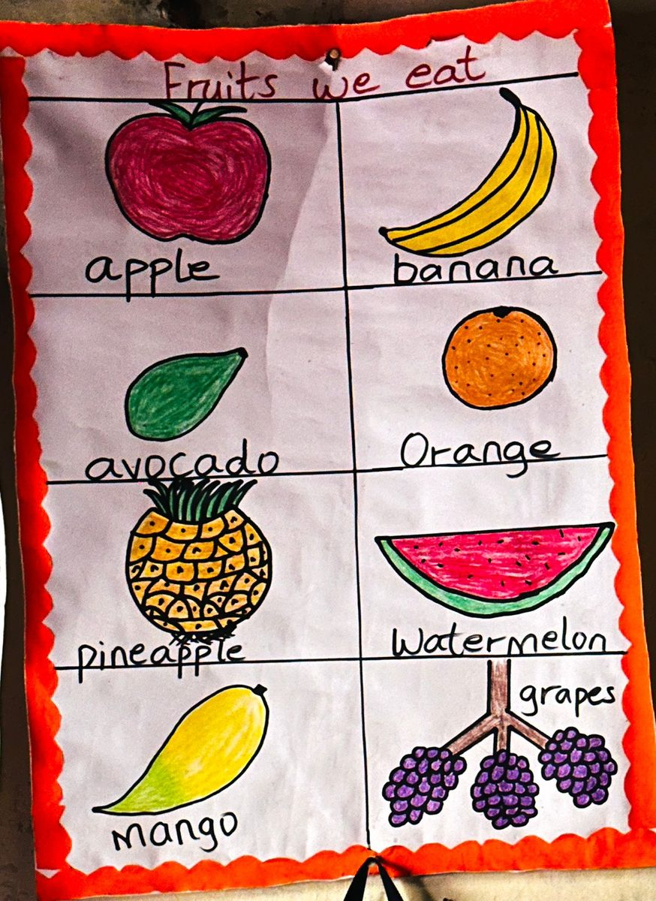

School life
A closer look at everyday life at Wits Garden — our classrooms, our learning displays, and our children hard at work. Click any photo to view it larger.
In the classroom
Learning, every day






Learning displays
What's on our classroom walls
Core values, creativity and everyday learning aids — the walls at Wits Garden work as hard as the learners do.






Videos
Wits Garden in motion
Short clips from around the school — tap play on any video below.
Clean drinking water and a warm meal, part of every school day.
A teacher preparing for the day's lesson.
Learners settled in and ready to learn.
A classroom full of engaged learners.
Learners together in class.
School life beyond the classroom — learners on a walk together.
A learner hard at work on a craft project.
Want to see it for yourself?
Visit us in Dandora Phase 5, or get in touch to arrange a time.
Get in touch